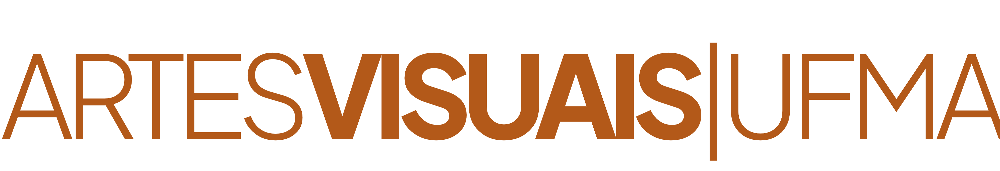

1º Período
- Cerâmica
- Fotografia
- Metodologia do trabalho científico
- Fundamentos socio-antropológicos da arte
- Elementos da linguagem visual

A trajetória do ensino de arte na Universidade Federal do Maranhão (UFMA) é marcada por um processo contínuo de atualização e compromisso com a formação docente. A história do curso remonta à Licenciatura em Desenho e Plástica, reconhecida originalmente em 1977. Em 1981, essa graduação foi transformada no curso de Licenciatura em Educação Artística, que por décadas formou os profissionais de arte do nosso estado.
Com o objetivo de atender às novas Diretrizes Curriculares Nacionais e elevar o padrão de qualidade acadêmica, o curso passou por uma profunda reformulação em 2010, assumindo a nomenclatura de Licenciatura em Artes Visuais. Esta mudança não foi apenas de nome, mas de identidade: o foco passou a ser a unidade entre a teoria estética e a prática de ateliê, preparando o professor para os desafios da contemporaneidade.
Depoimentos de egressos
"O curso de Artes Visuais me fez entender que minha arte vai muito além: ela educa, dialoga, provoca e cria caminhos. Mostrou-me que cada intervenção e oficina carrega potência, história e responsabilidade."
Edi Bruzaca
Egresso do curso
"O curso de Artes Visuais teve um papel fundamental na minha formação. Foi nesse espaço que comecei a desenvolver um olhar mais atento e sensível sobre as imagens e seus contextos. Essa experiência despertou meu interesse pela pesquisa e foi decisiva para que eu seguisse na pós-graduação."
Valéria Eulina Pires Pereira
Egressa do curso
"O curso me despertou para a pesquisa acadêmica, me auxiliou a encontrar um campo de estudo e me estimulou amadurecer a escrita."
Carlos Vinícius Moreira de Brito Santos
Egresso do curso
Corpo docente
Ensino, pesquisa e extensão